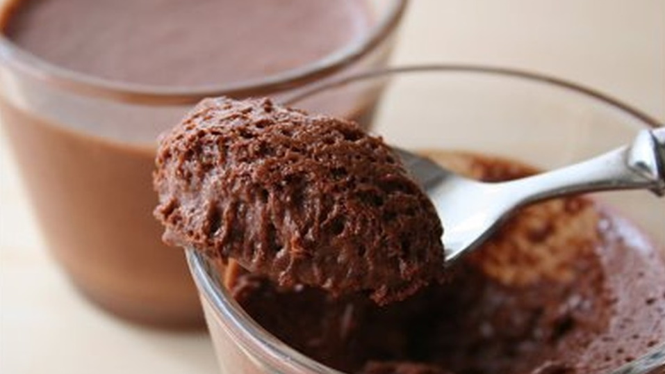

|  |
|
|
| ◄ | ► |
| O musse de chocolate teria sido inventado no início do século XX pelo artista francês Henri de Toulouse-Lautrec que a chamou originalmente de "maionese de chocolate". Você acha que vai conseguir resistir à maravilhosa sobremesa? |